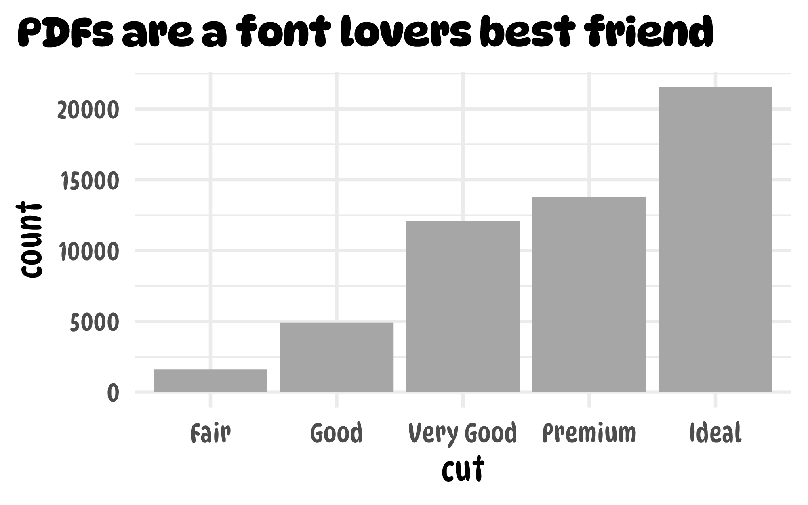

Save PDFs with custom fonts
pdf_fonts.Rmd{camcorder} doesn’t only work with raster images such as PNG and JPEG but also PDF files. There are some benefits of using the PDF format when saving ggplot output: vector graphics are lossless, can be converted easily in raster formats of any resolution and also be manipulated afterwards in a vector design tool. Furthermore, the PDF format often supports the use of custom fonts (when using the Cairo device)1.
To automatically save your graphics in PDF format, just change the device setting to cairo_pdf2 when recording your ggplot code:
library(ggplot2)
library(camcorder)
gg_record(
dir = file.path(tempdir(), "recording"),
device = cairo_pdf, # we need to set the Cairo device
width = 8,
height = 5
)Mac users should ensure that XQuartz is installed which is needed to use the cairo pdf device.
To supply custom fonts in R, the respective font needs to be installed locally on the system.
You can make sure the font file is installed by using the system_fonts() from the latest standard, the {systemfont} package:
systemfonts::system_fonts()
#> # A tibble: 92 × 9
#> path index name family style weight width italic monos…¹
#> <chr> <int> <chr> <chr> <chr> <ord> <ord> <lgl> <lgl>
#> 1 /usr/share/fonts/truety… 0 Lato… Lato Thin… ultra… norm… TRUE FALSE
#> 2 /usr/share/fonts/truety… 0 Libe… Liber… Bold bold norm… FALSE FALSE
#> 3 /usr/share/fonts/type1/… 0 Nimb… Nimbu… Regu… normal norm… TRUE FALSE
#> 4 /usr/share/fonts/type1/… 0 URWB… URW B… Ligh… normal norm… TRUE FALSE
#> 5 /usr/share/fonts/truety… 0 Lato… Lato Semi… semib… norm… TRUE FALSE
#> 6 /usr/share/fonts/truety… 0 Libe… Liber… Bold bold norm… FALSE TRUE
#> 7 /usr/share/fonts/truety… 0 Lato… Lato Medi… medium norm… TRUE FALSE
#> 8 /usr/share/fonts/type1/… 0 URWG… URW G… Demi semib… norm… FALSE FALSE
#> 9 /usr/share/fonts/truety… 0 Deja… DejaV… Ital… normal norm… TRUE FALSE
#> 10 /usr/share/fonts/truety… 0 Libe… Liber… Ital… normal norm… TRUE TRUE
#> # … with 82 more rows, and abbreviated variable name ¹monospaceYou can simply filter this tibble for any font:3
systemfonts::system_fonts() |>
dplyr::filter(grepl("Dyna", family)) |>
dplyr::pull(name) |>
sort()
#> character(0)Now let’s create a graphic with the DynaPuff Condensed typeface as the base_family of our theme:
g <-
ggplot(diamonds, aes(x = cut)) +
geom_bar(fill = "grey65") +
theme_minimal(
base_family = "DynaPuff Condensed",
base_size = 24
)
g
And now let’s add a non-condensed, bold title:
g +
ggtitle("PDFs are a font lovers best friend") +
theme(
plot.title.position = "plot",
plot.title = element_text(family = "DynaPuff", face = "bold")
)
That’s it. If you want to know more about good practices how to handle and customize fonts in ggplot2 check this blog post by June Choe.